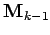
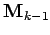

Inhalt Index DeskTop Bronstein

 Optimierung Nichtlineare Optimierung Verfahren für unrestringierte Aufgaben
Optimierung Nichtlineare Optimierung Verfahren für unrestringierte Aufgaben


Mit dem DFP-Verfahren ermittelt man, ausgehend von , eine Punktfolge nach der Vorschrift
| (18.83) |
Dabei ist eine symmetrische, positiv definite Matrix. Die Idee des Verfahrens besteht in einer schrittweisen Approximation der inversen HESSE-Matrix durch die Matrizen in dem Falle, daß  eine quadratische Funktion ist. Ausgehend von einer symmetrischen, positiv definiten Matrix , z.B. ( Einheitsmatrix), wird aus  durch Addition einer Rang-Zwei-Korrekturmatrix
eine quadratische Funktion ist. Ausgehend von einer symmetrischen, positiv definiten Matrix , z.B. ( Einheitsmatrix), wird aus  durch Addition einer Rang-Zwei-Korrekturmatrix
| (18.84) |
mit und  ermittelt. Die Schrittweite
ermittelt. Die Schrittweite  erhält man durch Strahlminimierung aus
erhält man durch Strahlminimierung aus
| (18.85) |
Ist  eine quadratische Funktion, dann geht das DFP-Verfahren für in das Verfahren der konjugierten Gradienten über.
eine quadratische Funktion, dann geht das DFP-Verfahren für in das Verfahren der konjugierten Gradienten über.